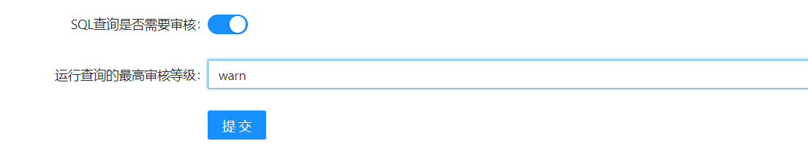

SQL工作台使用
1. 配置实例权限
1.1. 创建一个有SQL查询权限的角色
1.2. 绑定角色和实例

1.3. 创建一个用户,并绑定到刚才的角色

2. 配置实例审核等级
2.1. 创建/修改一个实例, 填写基础参数

2.2. 填写实例参数最下方SQL查询相关配置, 并提交修改

2.2.1参数说明
| 参数名 | 参数含义 |
|---|---|
| SQL查询是否需要审核 | 只要此项开启的实例才会在执行SQL时进行审核 |
| 运行查询的最高审核等级 | 如果审核等级低于这个等级将会放行, 高于这个等级将无法执行 |
3.使用SQL工作台
3.1登录CloudBeaver
3.2自动登录说明
在登陆SQLE时会检测CloudBeaver是否处于登陆状态, 如果CloudBeaver当前没有登录, SQLE将会自动使用当前SQLE用户登录CloudBeaver, 用户也可以自行使用SQLE用户从CloudBeaver中登录
3.3用户/实例同步说明
- 实例与用户均在用户登录时进行同步
- 因CloudBeaver产品限制, 用户/实例/权限的改动不会对已登录用户生效, 期望看到最新的改动需要重新登陆CloudBeaver
- admin用户可以看到所有SQLE实例
- 不支持的实例类型将不会进行同步
- SQLE将会屏蔽管理用户, 即使用CloudBeaver管理员将无法从SQLE的CloudBeaver处登录
4.下发SQL
4.1.创建一个链接
4.2. 输入需要执行的SQL
4.3. 点击执行按钮
4.4. 审核失败的SQL将会被拦截, 并报出错误, 可以点击Details查看审核详情


4.5. 按要求修改SQL, 再次执行, 如果审核通过将会执行当前SQL